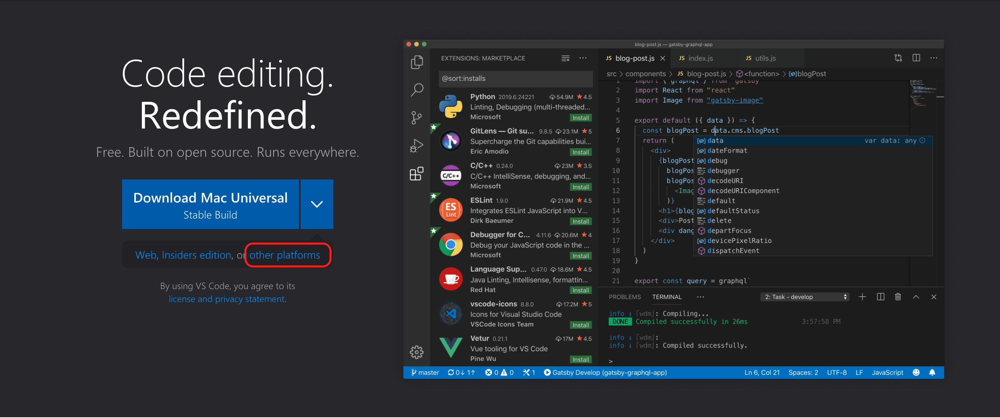
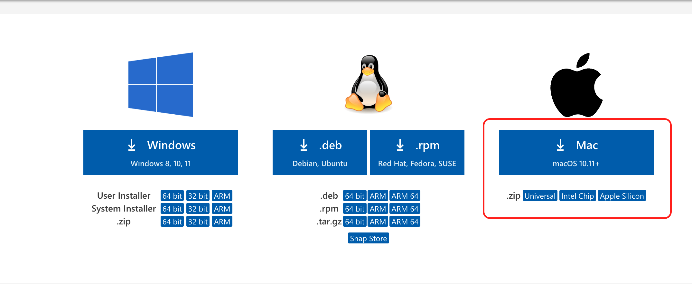
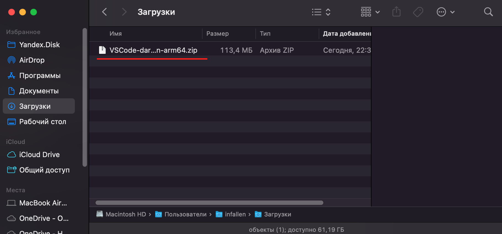
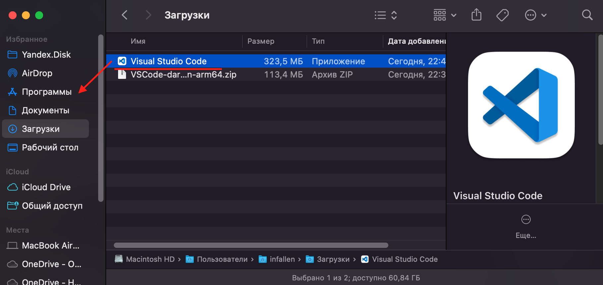

Установка Visual Studio Code
Установка на MacOS
Скачивание установочного файла
Проходим по ссылке и нажимаем other platform:

На открывшейся странице видим несколько вариантов сборок Visual Studio Code для MacOS:
Universal - универсальная сборка содержит в себе две версии для процессоров Intel и Apple Silicon, но и занимает больше места.
Intel chip - сборка для компьютеров с процессором Intel.
Apple Silison - сборка для компьютеров с процессором Apple Silicon.

Выбираем нужную вам версию и нажимаем для скачивания.
Установка
Открываем в Finder директорию, со скачанным архивом.  Дважды кликаем левой кнопкой мыши по архиву для разархивации и получаем файл приложения, который нужно перенести в директорию программы:  На этом установка Visual Studio Code на MacOS закончена.